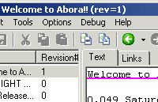
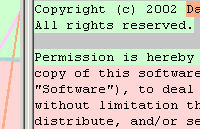
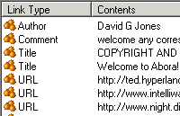
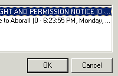
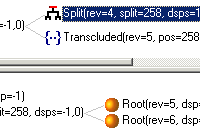
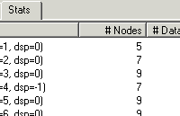
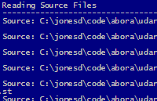

The following page contains a series of screen shots taken from some of the sub-projects making up the Abora project. The author recognises the value of such pages to get an overview of a project from a very practical point of view before expending the significant amount of effort needed to download, install, and prod and poke the actual software. If you have any ideas of missing views then please contact the author.
The Dolphin Demo was developed during the Summer of 2002 to investigate the Udanax-Gold design and explorations into xanalogical UIs. The result is very rough, but starts to hint at some of the interesting features that come out of the basic design.
|  | The demo is centred around a simple text editor that supports a number of xanalogical features. The central pane of the UI is the text editor, to the left the library of known works and the revisions of the currently selected work. Text can be modified just as in a normal editor. Some of the standard Windows mechanisms such as a copy-and-paste have been extended to support transclusions, it is also possible to create new works based on the current text again using a transclusion mechanism. |
|  | It is possible to compare the contents of the central text pane with any other edition. The base edition that the central text is compared against is shown in the pane to the right of the window. The mechanism of this comparison is interesting as it enables accurate fine grained differences to be recognised at the users level. This is documented in the Tech Report, but comes down to finding the similarities rather than the differences between texts. The rendering shown here is based on highlighting contiguous sequences of any texts that exist in both editions. Each sequence is assigned a colour and the background of the matching text in both editions is then painted with this colour. The splitter between the texts connects together matching sequences by drawing filled regions between them. The value of the rendering is that it helps to visualise when blocks of text have been copied, moved or even duplicated. Any text that is only found in one of the editions is rendered with a grey background. A further embellishment is that as the text cursor moves around the main text, the matching point in the compared text is brought into focus. |
|  | All of the links onto the text comprising the edition can be viewed from this pane. Links are fine grained down to the level of characters and may also have a type associated with them. The server implementation of links is interesting as it is built out of the transclusion mechanisms. One of the useful benefits of this is that links can survive revisions of documents. A simple typing scheme is used, so that the text tagged as being of type Title can be used for the name of the work as shown in the top-left pane. Another aspect of the link is whether it is defined as part of this work, or defined elsewhere and is just onto some of this edition's content. |
|  | It is possible to back-follow any of the content that this edition transcludes to all the other works that include the same content. This can be useful to find if anyone is quoting your own work, or to find other quotes or comments onto any content that you are interested in or quoting in you document. The extent of the content that is considered can be trimmed down to just the current selection for finer grain research. |
|  | Developer tool to investigate the actual ent-node structure that is being used under the covers to represent the current work. The top pane of the inspector shows each of the roots of the ent tree, with all the children branching off towards the right. The leaf nodes represent one or more characters of the content. Details of each node, such as the revision it was added to, and any displacement values are shown in line. The nodes of the ent tree can actually be shared by multiple edition revisions, which results in some nodes having multiple parents. This can be investigated in the lower pane which navigates root-ward from the node selected in the top pane. Each of the leafs of this lower pane should correspond to a root in the top pane. |
|  | Developer tool to list some summary statistics on the make up of the nodes making each revision of the ent tree. |
Udanax-Gold2Java is a small throw-away command line application to auto-translate the Udanax-Gold Smalltalk source into approximate Java source.
|  | The translation process is driven by an ant script. You feed in the original Smalltalk source files from Udanax-Gold, supplied with the release, and something approximating Java source files will be spit out, one file per class. There are about 500 or so classes in the release. These classes are generated under a src-gen directory to also allow some manually pre-created classes to patch up some of the wholes left by the unreleased Smalltalk source code. The whole process takes less than a minute on a 800mhz P3 machine. |
{kind=link}
{kind=link}
{kind=link}
{kind=link}
{kind=link}
{kind=link}
{kind=link}